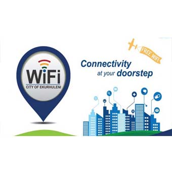

<ons-page ng-controller="categoryController" ng-init="start()"> 
  <ons-toolbar>
    <div class="left"> 
      <ons-back-button>Back</ons-back-button>
    </div>
    <div class="center">{{title}}</div>
  </ons-toolbar>

  <div class="swiper-container">
      
        <div class="swiper-wrapper">
            <div class="swiper-slide"></div>
            <div class="swiper-slide"></div>
            <div class="swiper-slide"></div>
        </div>
      
      
 </div>

    <p class="par-buttons">
            <ons-button class="btn-distance" ng-click="showNearMe()">
                <ons-icon icon="ion-model-s"></ons-icon>
                Near Me        
                </ons-button>
            <ons-button class="btn-distance" ng-click="showPOI()">
                <ons-icon icon="ion-eye"></ons-icon>
                View All      
            </ons-button>
        
            <!--<ons-button class="btn-distance" ng-show="title != 'Police'" ng-click="showStats()">
                <ons-icon class="fa fa-pie-chart"></ons-icon>
                Stats      
            </ons-button>-->
        
            <ons-button class="btn-distance" ng-show="title === 'Voting Stations'" ng-click="showLatestResults()">
                <ons-icon icon="fa fa-pie-chart"></ons-icon>
                Voting Stats      
            </ons-button>
        
           <ons-button class="btn-distance" ng-show="title === 'Voting Stations'" ng-click="showProfile()">
                <ons-icon icon="fa fa-user"></ons-icon>
                Profile     
            </ons-button>
        
           
    </p>  

    
</ons-page>
